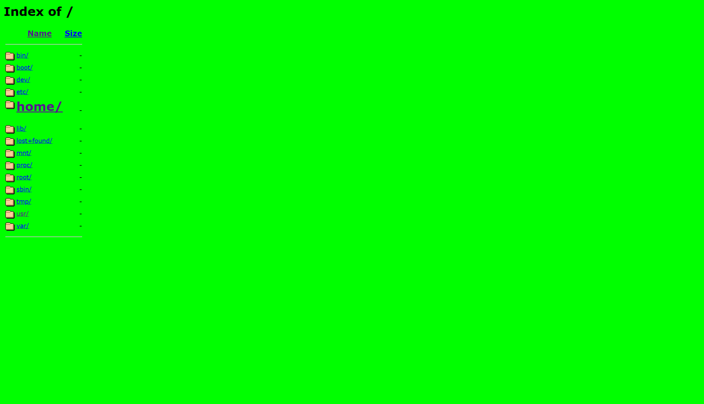
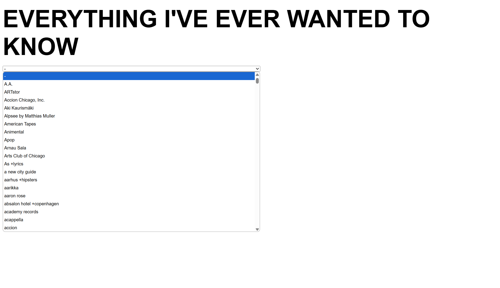
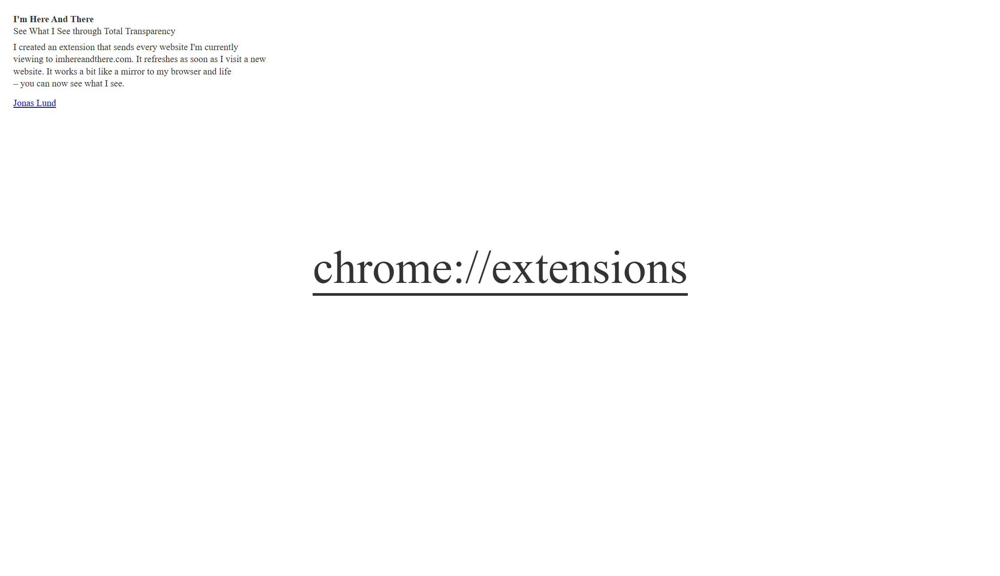

The works in this exhibit explore what happens when our lives are shared online and how we interact with others' digital footprints. I've chosen three works: Eva and Franco Mattes' Life Sharing (2000-2003), Martine Syms' EverythingIveEverWantedtoKnow.com (2007), and Jonas Lund's I'm Here and There (2011).
Although the message and purpose of each work differ, they come together through the use of the internet as a tool for self-surveillance. In each piece, the artist grants outsiders a glimpse into their digital life, whether it be through access to the contents of their home computer, a record of their search terms, or their real-time browsing habits. All three of these works are interactive, allowing viewers to download or join in on the artists' activities.
When the initial excitement of “hacking into” someone's privacy wears off, we realize that their content is quite mundane. In fact, their day-to-day digital footprints are rather uneventful, making us question why we find them interesting to spy on in the first place. Together, these works invite us to reflect on our own digital habits and how we engage with others' online information.
Life Sharing is a work of self-surveillance, where the artists made the contents of their home computer—emails, files, and bank statements—public for three years, blurring the lines between privacy and oversharing long before social media's rise.
EverythingIveEverWantedtoKnow.com is a conceptual piece that presents the artist's Google search history from 2004 to 2007, using it to explore the ways language and personal data are shaped by larger corporate systems.
I'm Here and There is an interactive performance that exposes the artist's real-time browsing habits, commenting on transparency and surveillance through the mundane nature of his actions.
